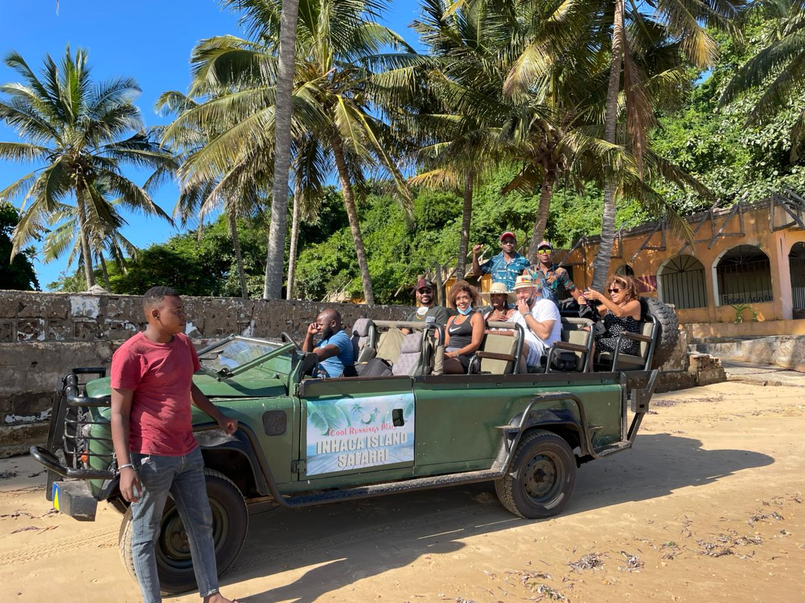
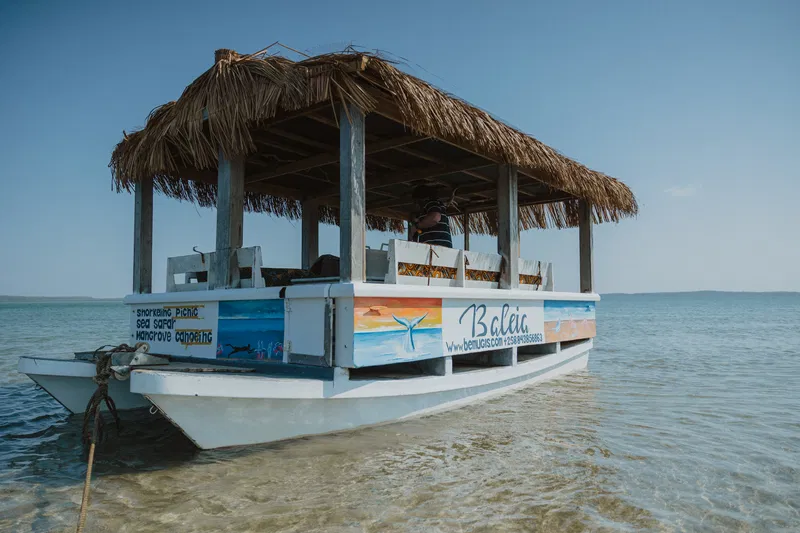
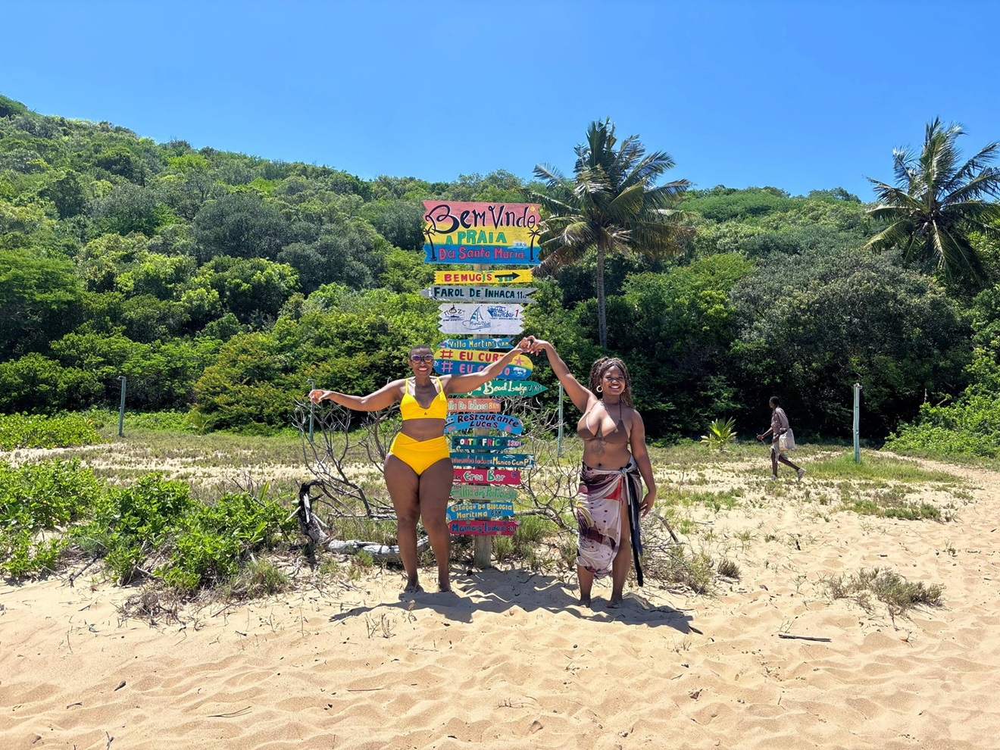

Ilha · Recifes de Coral
Ilha de Inhaca
A 30km de Maputo, a Inhaca é o paraíso do snorkeling e mergulho em Moçambique. Recifes de coral vibrantes, tartarugas marinhas e praias de areia branca imaculada.
Ver ToursAs joias naturais de Moçambique, a partir de Maputo
Cada destino é uma promessa de aventura, beleza natural e cultura autêntica

Ilha · Recifes de Coral
A 30km de Maputo, a Inhaca é o paraíso do snorkeling e mergulho em Moçambique. Recifes de coral vibrantes, tartarugas marinhas e praias de areia branca imaculada.
Ver Tours
Praia · Golfinhos
A Península de Machangulo abriga algumas das praias mais bonitas do mundo. Quilómetros de areia branca, águas turquesa e hipopótamos nas lagoas costeiras.
Ver Tours
Praia Isolada · Snorkeling
Na ponta norte da Ilha de Inhaca, Santa Maria é uma das praias mais remotas e deslumbrantes de Moçambique — quase intocada pelo turismo de massa.
Ver ToursA Ilha de Inhaca é um paraíso natural situado na Baía de Maputo, a apenas 30km da capital. Com uma área de 43km², a ilha alberga uma das maiores variedades de coral do Oceano Índico sul.
A Reserva Marinha Parcial de Inhaca é um santuário de biodiversidade marinha — tartarugas-de-couro, dugongos, tubarões-baleia e mais de 200 espécies de coral habitam estas águas.
A Península de Machangulo, a 60km de Maputo, é um dos destinos de ecoturismo mais exclusivos de Moçambique. Com 50km de costa pristina, lagos de água doce e florestas costeiras intocadas.
As suas praias de areia branca e fina são palco de avistamentos de golfinhos, baleias jubarte (Julho a Outubro) e tartarugas marinhas que desovam durante a noite.
Ver Tours para MachanguloReserve agora e descubra a beleza escondida de Moçambique com os melhores guias locais.